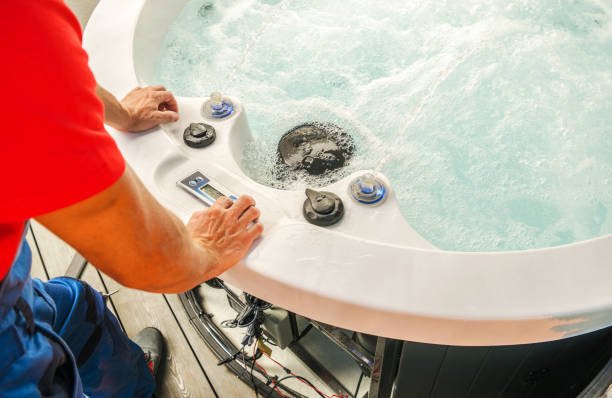
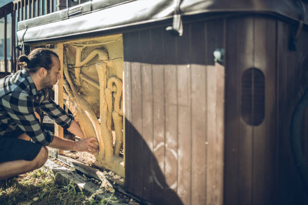

North Apollo Pennsylvania
info@fancyjacuzzirepair.pro
North Apollo Pennsylvania
info@fancyjacuzzirepair.pro

Choose the best Jacuzzi repair company in North Apollo Pennsylvania . We specialize in diagnosing and fixing spa problems promptly. Affordable pricing, expert care, and a reputation you can trust.
Click Here To Call Us (877) 848-1711Looking for reliable Jacuzzi repair services in North Apollo Pennsylvania ? We’ve got you covered! A malfunctioning Jacuzzi can disrupt your relaxation time and lead to unnecessary stress. Our skilled technicians specialize in providing professional and efficient repairs to ensure your Jacuzzi works like new. Whether it's a leak, faulty heater, broken jets, or electronic issues, we have the tools and expertise to handle it all.
At our company, we understand how important your Jacuzzi is to your lifestyle. That’s why we prioritize fast response times and high-quality solutions. Using advanced diagnostics and repair techniques, we pinpoint the root of the problem and provide long-lasting fixes. From residential hot tubs to commercial Jacuzzis, no job is too big or small for us.
What sets us apart is our commitment to customer satisfaction. We offer competitive pricing, transparent communication, and flexible scheduling tailored to your convenience. Additionally, we use only top-grade replacement parts to guarantee your Jacuzzi operates smoothly and efficiently.
Don’t let Jacuzzi troubles ruin your peace of mind. Call us today for expert Jacuzzi repair services in North Apollo Pennsylvania and experience the difference in quality and professionalism. Let us restore your spa experience and bring relaxation back into your home.
Residential & commercial Jacuzzi repair
Quality services at affordable prices
Immediate 24/ 7 emergency services


Jacuzzis are a luxurious addition to any home, but like all appliances, they can face issues over time. If you're experiencing problems with your jacuzzi in North Apollo Pennsylvania our expert technicians are here to help! Below are some of the most common jacuzzi problems and how we can fix them.
Water Temperature Issues
If your jacuzzi isn’t heating up or maintaining a consistent temperature, it could be due to a faulty thermostat or heater element. Our team at Jacuzzi repair will quickly diagnose the issue and replace any defective components to restore your jacuzzi's heating functionality.
Noisy Jets
Strange sounds coming from your jacuzzi jets may indicate air buildup or debris blockage. We offer thorough jet cleaning and maintenance services to ensure your jacuzzi operates quietly and smoothly, restoring your relaxation time to its fullest.
Water Leaks
Leaks can occur due to damaged seals or pipes. Our skilled professionals can identify and repair leaks efficiently, ensuring your jacuzzi stays water-tight and prevents further damage to the unit.
Cloudy or Dirty Water
Cloudy water in your jacuzzi could be a sign of a filtration problem or improper chemical balance. We provide expert water testing and filter cleaning to ensure your jacuzzi water stays clean and clear.
If you encounter any of these issues, don’t hesitate to reach out to Jacuzzi repair in North Apollo Pennsylvania . Our team is committed to providing fast, reliable jacuzzi repair services across North Apollo Pennsylvania and surrounding areas. Contact us today for a consultation or service appointment!
Residential & commercial Jacuzzi repair
Quality services at affordable prices
Immediate 24/ 7 emergency services
The plumbing system of your jacuzzi is essential for efficient water circulation and sanitation. If you notice leaks, inconsistent pressure, or water quality issues, it’s crucial to address plumbing problems promptly. Our jacuzzi plumbing repair and maintenance services in North Apollo Pennsylvania focus on diagnosing and solving plumbing issues effectively. From pipe repairs to valve replacements, our experienced technicians ensure your plumbing system is functioning optimally. Regular maintenance is key to preventing future plumbing problems, and our team is committed to keeping your jacuzzi in excellent condition.

Maintaining the right balance of chemicals in your Jacuzzi water is crucial for a safe and enjoyable experience. Poor water quality can lead to skin irritation and improper sanitation. At Jacuzzi repair, we offer professional water quality and chemical balancing services tailored to your specific spa requirements. Our skilled technicians utilize advanced testing methods to adjust chemicals, ensuring that your hot tub water is clean, safe, and inviting for you and your family .

Proper insulation is key to maintaining water temperature and reducing energy costs. If your jacuzzi’s insulation is damaged or deteriorated, you may notice higher energy bills and longer heating times. Our jacuzzi insulation repair and replacement services are designed to enhance the efficiency of your hot tub. We assess your insulation needs and provide solutions that keep your jacuzzi warm and inviting, regardless of the season. By choosing expert insulation services, you can enjoy your spa while saving energy and costs.

Every Jacuzzi requires regular maintenance to keep it in top shape across seasons. Our maintenance and seasonal service ensures your spa is ready for every season, from preparing it for winter to revitalizing it for summer use. At Jacuzzi repair, we are experts in comprehensive maintenance services tailored to your specific needs. Our dedicated technicians in North Apollo Pennsylvania work diligently to ensure your hot tub remains a relaxing haven all year round.

Preparing your jacuzzi for winter is crucial to prevent damage from freezing temperatures. Our jacuzzi winterization services provide complete winter prep, including draining, winterizing all components, and ensuring that your hot tub is protected until spring. We also provide expert advice on how to maintain your jacuzzi during the off-season. With our winterization services, you can have peace of mind knowing that your hot tub is protected from severe winter conditions.
Regular maintenance and cleaning are the keys to enjoying a long-lasting and efficient hot tub. At Jacuzzi repair, we offer comprehensive Jacuzzi maintenance services that keep your spa in pristine condition. Our professional technicians will perform routine checks, cleaning, and chemical balancing to ensure optimal performance. We customize our maintenance plans according to your usage and requirements, providing you with flexibility and convenience. By prioritizing regular maintenance, you significantly reduce the risk of costly repairs and enhance your spa experience. Trust us to care for your Jacuzzi, ensuring you enjoy it without worry.

Proper chemical treatment and water balancing are critical to ensuring a safe and enjoyable spa experience. Poorly balanced water can lead to skin irritation and equipment corrosion. Our jacuzzi chemical treatment and water balancing services are designed to provide comprehensive testing and adjustments, creating the ideal chemical environment for your hot tub. Our trained professionals use quality products and proven techniques to optimize your water chemistry, ensuring it remains sparkling clean and safe for you and your family.

Whether you’ve just installed a new jacuzzi or are bringing an existing one out of storage, proper start-up procedures are essential. Our jacuzzi start-up services include a thorough assessment of all systems, filling the tub, balancing the water, and ensuring all equipment is functioning correctly. During the start-up process, we provide valuable tips and advice for maintaining your spa, so you can enjoy it to the fullest. Trust our team to help you get started on the right foot, ensuring a safe and pleasurable hot tub experience.

A quality spa cover is essential for maintaining water temperature and cleanliness, as well as protecting your hot tub from the elements. When your cover becomes damaged, it may need repair or replacement. At Jacuzzi repair, we specialize in spa cover repair and replacement services, utilizing durable materials that ensure long-lasting protection for your Jacuzzi. Trust us to enhance your hot tub’s efficiency and appearance here .
Years Experience
Expert Technicians
Satisfied Clients
Compleate Projects
At Fancy Jacuzzi Repair, we understand the importance of a fully functioning jacuzzi to your relaxation and comfort. Serving North Apollo Pennsylvania and the surrounding areas, our team is dedicated to providing top-notch jacuzzi repair services that ensure your spa experience is never interrupted. Whether it’s a minor issue or a major malfunction, we’ve got you covered with expert solutions tailored to your specific needs.
Why trust Fancy Jacuzzi Repair? Our certified technicians possess extensive experience working with all jacuzzi brands and models, using the latest diagnostic tools and techniques to identify and fix any issues quickly and effectively. We pride ourselves on our prompt and reliable service, ensuring that your jacuzzi is up and running without unnecessary delays.
When you choose us, you’re choosing a company that prioritizes customer satisfaction. Our commitment to delivering exceptional service is matched by our transparent pricing and comprehensive warranty on all repairs. Whether you need routine maintenance or urgent repairs, our team is always ready to assist you with affordable, high-quality solutions.
Fancy Jacuzzi Repair has earned a reputation as the trusted name for jacuzzi repair in North Apollo Pennsylvania thanks to our proven track record of excellence and attention to detail. We go the extra mile to ensure your jacuzzi is restored to optimal condition, so you can enjoy peace of mind and ultimate relaxation. Choose us for reliable jacuzzi repair you can count on!
Your hot tub's pump is the heart of your spa, circulating water and keeping it clean. If your jacuzzi is experiencing low water pressure, strange noises, or failure to start, it may be time for a professional Jacuzzi pump repair. Our experienced technicians specialize in diagnosing and fixing pump issues, ensuring your spa operates at peak performance. We use high-quality replacement parts and follow industry-standard repair procedures. Choosing us means you’ll receive prompt service, a satisfaction guarantee, and expert advice on maintaining your pump to prevent future issues.
The heater of your hot tub is crucial for maintaining the perfect water temperature, ensuring your relaxation and enjoyment. When your hot tub heater fails, it not only disrupts your soaking routine but can also lead to more extensive damages if not addressed promptly. Our experienced technicians at Jacuzzi repair offer swift and reliable hot tub heater repair services in North Apollo Pennsylvania . We use cutting-edge diagnostic tools to identify issues quickly, from faulty thermostats to heating element failures. Our team is fully equipped to handle all types of hot tub heaters, providing repairs that last. Trust us to keep your hot tub toasty warm, allowing you to soak in comfort all year round. Choose Jacuzzi repair for top-tier hot tub heater repair services where quality and customer care come first.
A leak in your jacuzzi can cause significant water loss and damage to your property if left unchecked. At Jacuzzi repair, we understand the urgency and potential problems associated with water leaks in your hot tub. Our leak detection specialists employ advanced techniques, including pressure testing and underwater cameras, to locate leaks without invasive measures. Once detected, we provide effective repair solutions to ensure your jacuzzi returns to its full functionality. With our commitment to excellence and customer satisfaction, we guarantee that our leak detection and repair services will leave you with peace of mind and a fully operational jacuzzi. Don’t let leaks dampen your enjoyment; contact Jacuzzi repair for reliable jacuzzi leak detection and repair in North Apollo Pennsylvania .
Your Jacuzzi motor is the heart of your spa, powering the jets and circulating the water. If you notice unusual sounds or decreased performance, it might be time for a motor inspection. Jacuzzi repair provides comprehensive Jacuzzi motor repair services, ensuring you enjoy uninterrupted relaxation. Our experienced technicians will assess the condition of your motor, identifying any issues such as worn-out bearings, corroded wires, or faulty capacitors. With a commitment to quality and efficiency, we ensure that our repair services will extend the life of your motor and enhance your overall hot tub experience. Choose us for our expertise and dedication to customer service.
For a truly rejuvenating experience, your Jacuzzi jets must operate flawlessly. At Jacuzzi repair, we specialize in repairing and replacing Jacuzzi jets, ensuring optimal performance and therapeutic benefits. Whether you’re facing low water flow, malfunctioning jets, or physical damage, our team is prepared to provide swift and effective solutions. We carry a wide range of replacement jets, giving you options that fit your specific model and design. Our approach focuses on both functionality and customer satisfaction, making us the preferred choice for jet repair and replacement . With our expertise, you can look forward to an enhanced hydrotherapy experience.
The control panel is your interface to the world of relaxation within your hot tub. If yours is malfunctioning, it can disrupt your entire experience. At Jacuzzi repair, we offer expert Jacuzzi control panel repair services. Our technicians are well-versed in the specific electronics and software configurations of various models, allowing us to quickly diagnose and fix issues effectively. From unresponsive buttons to error codes, we handle it all, bringing back the functionality you need to enjoy your spa. Count on us for reliable service, fast turnaround, and comprehensive warranties on our repairs, ensuring your control panel is restored to full working order.
Inconsistent water pressure can significantly affect the performance of your jacuzzi, leading to a subpar depth of water, insufficient jet pressure, or even operational failure. At Jacuzzi repair, we specialize in diagnosing and repairing water pressure issues in jacuzzis. Our expert technicians utilize modern tools and techniques to identify the source of the problem quickly, whether it be clogged filters, broken pumps, or faulty valves. We provide actionable solutions designed to restore proper water circulation and pressure, ensuring your hot tub operates at peak performance. Trust Jacuzzi repair for effective water pressure issues repair services that deliver results you can rely on.
Electrical issues in a Jacuzzi can pose serious safety risks and disrupt your relaxation experience. To ensure your hot tub is safe and reliable, trust the professionals at Jacuzzi repair for expert electrical troubleshooting and repair services. Our certified electricians specialize in Jacuzzi systems, accurately diagnosing issues ranging from faulty wiring to circuit breaker problems. We use advanced diagnostic tools to assess the situation quickly and implement safe solutions that comply with all local codes. With our experience and attention to detail, you can relax knowing that your electrical systems are handled by skilled professionals who prioritize your safety and satisfaction.
Proper water circulation is crucial for a clean and enjoyable hot tub experience. If you're facing water circulation issues, contaminants may build up, leading to an unclean environment. At Jacuzzi repair, we specialize in diagnosing and repairing hot tub water circulation problems, ensuring that your system works effectively and efficiently. Our team assesses filters, pumps, and plumbing to identify any hindrances to fluid movement. Reset the rhythm of your hot tub’s circulation with our expert services .
Filters play a crucial role in keeping your jacuzzi water clean and safe for use. Over time, filters can become clogged or damaged, leading to inadequate filtration and poor water quality. Our jacuzzi spa filter replacement service is designed to ensure you have the right filters installed. We carry a wide selection of filters to fit any jacuzzi model, and our knowledgeable staff can help you choose the best option for your needs. Regular filter maintenance and replacement will prolong the life of your spa equipment, and our expert team is here to guide you every step of the way.
Not all jacuzzis are created equal, and some may require specialized repair expertise due to unique models or features. Our specialized jacuzzi repair services cater to various jacuzzi systems, from high-end luxury models to standard residential units. Our technicians have the training and experience needed to handle unique components and specialized systems. Whether it’s a specialized jet system, advanced heating technology, or unique construction materials, our team is equipped to provide the repair and maintenance services your spa requires.
An ozone system enhances water purification in your hot tub by reducing the need for chemicals and maintaining clean water. If you notice unusual odors or reduced water clarity, you may have an ozone system malfunction. Our jacuzzi ozone system repair service in North Apollo Pennsylvania ensures that your ozone generator is functioning correctly, promoting a healthier and more enjoyable spa experience. We utilize advanced diagnostic tools to identify issues and implement effective repairs or replacements, allowing you to relax and enjoy your spa without the hassle of murky water.
Over time, wear and tear can affect the surface of your hot tub, leading to scratches, discoloration, and mold build-up. Our hot tub resurfacing and reconditioning services restore the aesthetics and functionality of your spa. At Jacuzzi repair, we provide quality workmanship and superior products to revitalize your hot tub’s surface, ensuring that it looks as good as new. Our services are available to homeowners letting you reclaim the beauty and enjoyment of your space in no time.
If your Jacuzzi is showing erratic behavior or malfunctioning unexpectedly, it may be in need of recalibration. At Jacuzzi repair, our expert technicians offer comprehensive system diagnostics and recalibration services to ensure that every component functions harmoniously. We understand the complexities of modern Jacuzzi systems, and with our precise evaluation methods, we guarantee a return to peak performance. Residents in North Apollo Pennsylvania can count on us to restore their hot tub's functionality with our professional recalibration services.
An effective drainage system is vital for maintaining the cleanliness and hygiene of your hot tub. Blockages or leaks can lead to significant issues if not addressed promptly. Our jacuzzi drainage system repair service focuses on restoring proper drainage to prevent water pooling and damage. We assess the entire system, looking for blockages, damages, or improper installation. Our experienced technicians have the expertise to implement comprehensive repairs that restore the function of your drainage system and enhance the longevity of your jacuzzi while ensuring user safety.
For optimal air delivery in your Jacuzzi, a fully functional blower is essential. If you’re experiencing issues with your hot tub's blower, Jacuzzi repair is here to help! Our expert technicians provide top-notch blower repair and replacement services, ensuring powerful air circulation for your relaxing bubble baths. We carefully evaluate your blower system to assess any faults and recommend appropriate solutions, whether it’s a simple repair or a complete replacement. We take pride in our customer service and attention to detail, helping you enjoy the relaxing experience you deserve without disruption.
Lighting plays an essential role in creating the perfect ambiance for your hot tub experience. If you’re experiencing flickering lights or complete outages, professional lighting repair is vital. Our jacuzzi lighting repair services cover everything from LED fixtures to traditional lighting setups. We conduct thorough diagnostics to identify electrical issues or faulty components, providing effective repair solutions. Whether it’s minor fixes or complete system upgrades, our team is here to enhance your hot tub’s visual appeal, ensuring you can enjoy your spa at any time of day or night.
The shell of your hot tub is prone to damage from sharp objects, wear and tear, and weather exposure, leading to cracks and chips. A damaged shell not only looks unappealing but can also lead to leaks and structural issues. Our hot tub shell repair service in North Apollo Pennsylvania specializes in restoring and repairing all types of hot tub shells, from acrylic to fiberglass. We employ advanced techniques and high-quality materials to ensure a long-lasting repair that maintains the aesthetic and structural integrity of your spa. Trust us to bring your hot tub shell back to life.
Maintaining your Jacuzzi after a repair is crucial to ensure its longevity and optimal performance. Whether you’ve recently had repairs done to your Jacuzzi in North Apollo Pennsylvania proper upkeep can prevent future issues and maintain a relaxing, therapeutic experience.
Regular Cleaning
To maintain your Jacuzzi, clean the filters regularly. A clean filter ensures the water remains free of debris and the pump works efficiently. Cleaning the filter at least once every 2-4 weeks is recommended. Additionally, always clean the interior surfaces to remove dirt, oils, and soap scum build-up.
Check the Water Chemistry
Balanced water is key to the health of your Jacuzzi and your skin. After any repair, ensure the pH, alkalinity, and sanitizer levels are properly balanced. Test your water at least once a week to avoid damage to the tub and its components.
Inspect the Jets and Plumbing
After a repair, pay close attention to your Jacuzzi’s jets. Make sure they are functioning smoothly and that no air bubbles are coming from the wrong places. Regular inspection of the plumbing system will help catch any leaks or blockages early, preventing costly repairs later on.
Cover Your Jacuzzi
When not in use, keep your Jacuzzi covered to protect it from the elements. A high-quality cover will help keep debris out, reduce energy consumption, and maintain water temperature.
Professional Maintenance
If you notice any issues after your repair, don’t hesitate to call a professional. Expert Jacuzzi maintenance services in North Apollo Pennsylvania can address potential problems before they become major issues.
By following these simple maintenance tips, you can ensure your Jacuzzi remains in great condition long after your repair in North Apollo Pennsylvania . Proper care will extend the life of your tub and provide many years of enjoyable, stress-free use.
North Apollo is a borough in Armstrong County, Pennsylvania, United States. The population was 1,252 at the 2020 census.
Yes, we carry high-quality replacement parts to ensure durable and reliable repairs .
Yes, we can enhance your Jacuzzi with new jets, control systems, and other modern upgrades .
We accept various payment methods, including cash, credit cards, and online payments, for our services .
Most repairs are completed within 1-2 hours, but the timeline depends on the complexity of the issue.
Whenever possible, we offer same-day repair services for urgent needs.
Yes, we provide repair services for both residential and commercial Jacuzzi systems .
Loud noises may result from a faulty pump or motor. Our North Apollo Pennsylvania technicians can inspect and resolve the issue.
We pride ourselves on fast response times. In most cases, we can schedule your Jacuzzi repair in North Apollo Pennsylvania within 24-48 hours.
Yes, we specialize in addressing water pressure issues to restore your Jacuzzi's functionality in North Apollo Pennsylvania .
You can call us or book online to schedule your repair appointment .
Yes, we provide warranties on our repairs to ensure your satisfaction and peace of mind .
Absolutely! Fancy Jacuzzi Repair offers emergency repair services in North Apollo Pennsylvania to address urgent issues and get your Jacuzzi running smoothly.
Contact Fancy Jacuzzi Repair immediately! Our team will troubleshoot and resolve the issue quickly.
Absolutely! Our repair services are fully insured for your protection.
Regular maintenance and prompt attention to small issues can prevent major repairs. We offer maintenance services in North Apollo Pennsylvania .
Yes, we offer repair and replacement services for damaged Jacuzzi covers in North Apollo Pennsylvania .
Yes, all our technicians are certified and highly experienced in providing top-quality Jacuzzi repair services in North Apollo Pennsylvania .
Repair costs vary depending on the issue, but we provide competitive pricing and transparent quotes.
Yes, we offer free estimates for all Jacuzzi repairs in North Apollo Pennsylvania to help you understand the scope and cost of the work.
Common issues include pump malfunctions, heater failures, leaks, and jet blockages, all of which we expertly handle .
Our fast, reliable, and affordable services, combined with expert technicians, make us the top choice for Jacuzzi repairs in North Apollo Pennsylvania .
Jacuzzi jets often stop working due to clogged filters, airlocks, or pump issues. Our team can quickly diagnose and fix these problems.
Yes, we specialize in repairing Jacuzzis of all makes, models, and ages across North Apollo Pennsylvania .
If your Jacuzzi water isn't heating or takes too long to heat, it may indicate a heater issue. Our experts can inspect and repair it promptly.
Circulation issues are often due to a clogged filter or pump malfunction. We can fix this efficiently .
Yes, we use advanced tools to detect and repair Jacuzzi leaks efficiently in North Apollo Pennsylvania .
Regular maintenance every 3-6 months is recommended to keep your Jacuzzi in optimal condition. We offer maintenance plans .
Fancy Jacuzzi Repair serves all neighborhoods and surrounding areas .
Yes, we are experienced in repairing or replacing faulty control panels for Jacuzzis in North Apollo Pennsylvania .
Fancy Jacuzzi Repair offers a wide range of Jacuzzi repair services in North Apollo Pennsylvania including fixing leaks, pump and motor repairs, jet replacements, heater issues, and more.
Amazing job! Fancy Jacuzzi Repair fixed my jacuzzi quickly and at a reasonable price. They explained everything in detail and ensured I was satisfied with the results. Highly recommend them to anyone in North Apollo Pennsylvania !
Profession
The best jacuzzi repair service in North Apollo Pennsylvania ! Fancy Jacuzzi Repair did an outstanding job fixing my jacuzzi. They were prompt, professional, and the quality of work was excellent. Highly recommend!
Profession
Wonderful service from Fancy Jacuzzi Repair! They were able to get my jacuzzi fixed quickly and efficiently. The team was friendly and professional, and I couldn’t be happier with the results!
Profession
North Apollo PA Jacuzzi repair Pros
(877) 848-1711
info@fancyjacuzzirepair.pro
09.00 AM - 09.00 PM
09.00 AM - 12.00 PM